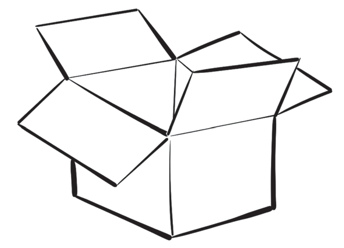

- Place it on a larger box material, and trace its outline;
- Cut along the traced outline using a trimming knife or a pair of scissors.
- Draw lines on the sections that will be folded, then fold them.
- Assemble the box using water-based glue.
Ensure you maintain cleanliness in all steps to get a neat and attractive box as shown in Figure 15.

Making baskets using scraps of various materials
Basket making using various types of materials is a very important art for the community. The baskets that are made can be sold at the market for different uses. There are many types of materials, such as paper, sisal ropes, nylon threads, and raffia, that can be used to make baskets.